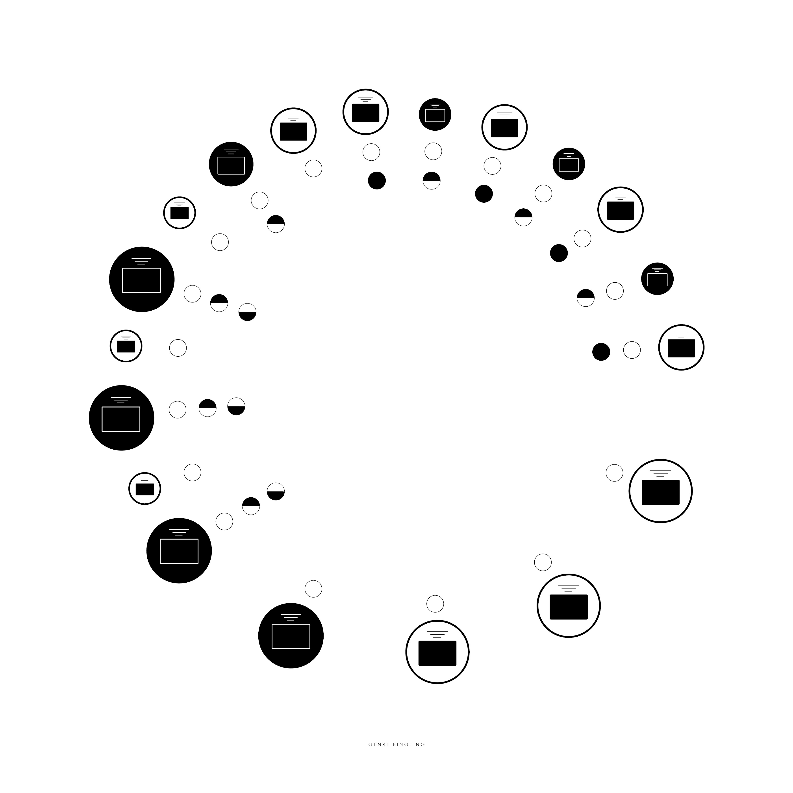

For my connections project, I learned how to communicate a concrete topic through abstract images. The composition takes the shape of an analog clock with two circles at each hour to represent day and night depending on the fill. Within each circle, there is an icon that represents a television, the size of which represents the number of people watching. Within the outer circle are smaller circles to represent the different genres of TV shows that I watch (comedy, game, cooking, and horror). The overall composition shows how much time is spent watching various shows by the residents of my household without the use of actual words or data.